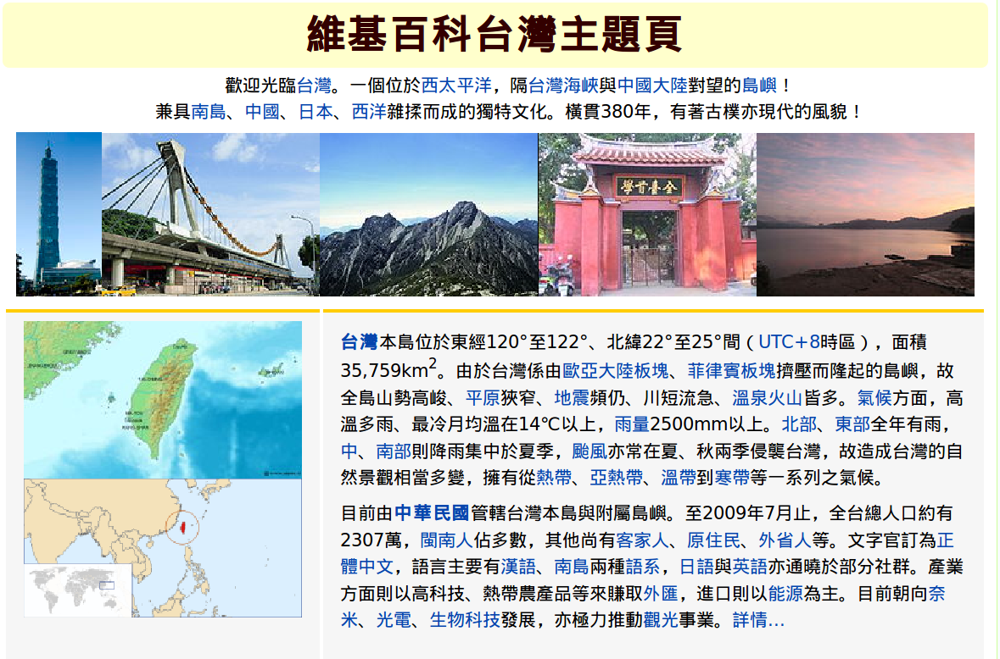

維基經驗教給我們的事

撰寫一個自由開放的百科全書，貢獻自己的微薄力量來成就一部海納百川的經典。說起維基百科的目標，總是冠冕堂皇地令人折服。但是在這宏大的理想口號之下，編輯維基百科的工作往往也受到一些誤解與質疑。
正如同開源軟體概念之初，總要面對封閉軟體將「智慧財產」與「改善軟體動力」綁定，強烈質疑一份原始碼全然公開的軟體，無法從中獲取收益而繼續開發工作。以 CC-by-sa 為授權方式的維基百科，同樣也面對許多人「編輯百科到底有什麼用？」的質疑，甚至更有些人直接推想參與維基百科的編者，可以從編寫過程中獲得稿費，不敢相信有人願意花時間、花精力貢獻知識而分毫不取。
我們實在也沒有必要唱高調，將功利的思想視為對開放的維基精神破壞。在開源軟體供應商已經從「販售服務」而非「販售軟體」中建立獲利的模式後，反而吸引了更多公司或個人投入開源的陣營；因此我們也不妨想一想如何在維基百科經驗中找出有利可圖之處，比起高唱熱血與分享，更能夠爭取到大眾的參與。
用戶貢獻 最誠實的履歷
首先要釐清的是，參與維基百科編輯帶來的核心價值不是「知識」，而是「求知的能力」。由於維基百科要求的不只是將腦中的知識貢獻出來，而是要找到可靠的文獻，將之消化，重新整理、組織、統合，才能夠完成一個受到其他編輯認可的作品。目前台灣許多活躍的編輯，還只是國、高中生，但是他們為了編輯條目，甚至會去主動尋找碩博士論文閱讀、改寫，能力遠勝許多只能從搜尋引擎上找到一般的網頁資料，複製貼上後就當成報告交差的大學生。翻閱一個編者的編輯紀錄，其實是比在校成績更不會說謊的能力保證。
其次，不同於撰寫個人部落格，維基百科由於開放、人人可以編輯，在編寫過程中會遭遇種種的衝突，需要具有溝通的能力、妥協的性格。這些也通通收錄在編者的「用戶貢獻」紀錄中，這些貢獻都是無法修改的紀錄，當然也是強而有力的證據。
▲ 圖1 作者 Reke 在中文維基百科的用戶貢獻
專題頁面 臥虎藏龍的人才庫
我們可以想像在社會普遍認識「維基履歷」的重要性後，編寫維基就不再只是一份熱血的義務工作。這份履歷在升學甄試、就業面試兩部分，都會成為讓一個好維基編者脫穎而出的有利資料。
事實上，對於一個企業來說，維基百科的價值除了可以做為求職者能力的準確參考之外，其實也是一個成本極低的人才庫。為了聯繫同好，便於協調條目的寫作，維基百科社群內部成立了不少協作組織，例如專題頁面、條目質量提升協作計劃的各項主題子計劃頁面。這些頁面不但可以紀錄成員在某個專業領域的貢獻，方便找出同時擁有熱情與專業知識的好工作伙伴。如果公司內部幹部平日業餘時就熱心參與社群的活動，建立合作的情誼，那麼在說服人才加入團隊時，更有事半功倍的效果。

▲ 圖2 中文維基百科上的台灣主題頁
當然，就像自由軟體的商機需要先有部分勇於開創的公司團隊，率先施行並獲得成功之後才可能得到大眾的認可，然而維基履歷的價值，也必須在維基社群發展較為活躍，有足夠組織力量向社會進行宣導，這樣的願景也才能夠成真。
作者簡介
Reke，台灣維基社群成員，PTT 電影板板主，主業為文字工作者。著迷於電影，耽溺於文字；在現實裡怯弱地柔從，在評論裡驕傲地反抗。電影部落格：https://rekegiga.blogspot.com/